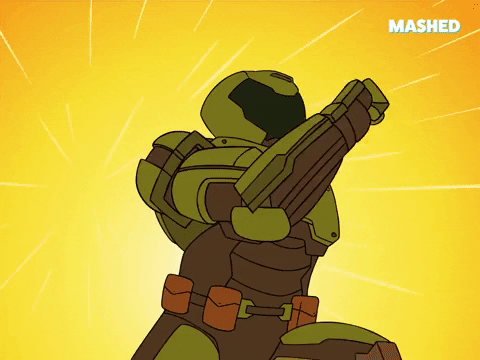
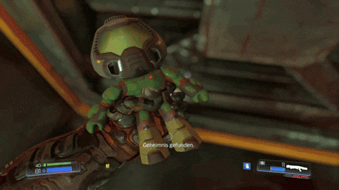
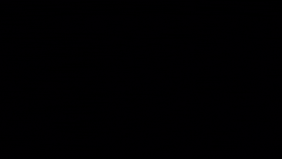
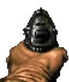
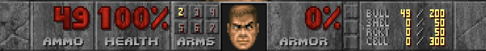

50-90MPH
Doom Guy runs approximately 50-90MPH in the classic games.

Doom is a 1993 first-person shooter game developed and published by id Software for MS-DOS. It is the first installment in the Doom franchise. The player assumes the role of a space marine, later unofficially referred to as Doomguy, fighting through hordes of undead humans and invading demons. The game begins on the moons of Mars and finishes in hell, with the player traversing each level to find its exit or defeat its final boss. It is an early example of 3D graphics in video games, and has enemies and objects as 2D images, a technique sometimes referred to as 2.5D graphics.

Doom Guy runs approximately 50-90MPH in the classic games.

The working title for the original was “Green and Pissed” and you used to be able to find Usenet posts from the crew referring to the game as that around late 1992 / early 1993.

The chainsaw and super shotgun weapons in the game were inspired by the Evil Dead series of movies.
PHOBOS // ROUTE MAP

